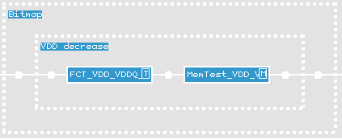
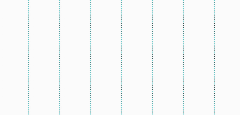

Analyzing results using the Bit Fail Map Viewer
The bitmap example in this GDDR demo testflow shown in the figure below is based on a decrease of the memory devices' operating voltage (Vdd) and consists of:
- A standard functional test implemented to validate per pin failing.
- The ExecutionEngine test method used to perform the
reconstruction and to create the bitmap.

The test method specifies test suite blocking. The reconstruction is adjacent to the execution with direct creation of a bitmap file. The file is stored in <DEVICE>/mts/bitmap/bitmap_data.
A xm6n pattern is used, utilizing only a subset of the available memory bits (8 banks, 128 rows, 512 columns). This subset consistently fail due to the decreased Vdd (1.4V) (see following figure).

The data required and the analysis of the results is described in Using the BFM Viewer.
Functional changes
- Introduced before SmarTest 6.3.2
- MTP 3.0.1: The Memtest test methods have been replaced by the ExecutionEngine test method